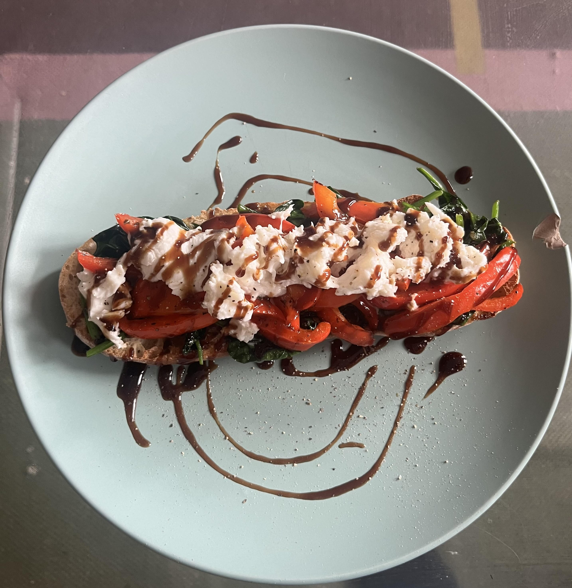

Mediterranean Vegetable Panini

My delicious mediterranean vegetable panini toasted and doused in a healthy dose of balsamic glaze
I first made this panini maybe 3 years ago and has been a staple easy lunch recipe ever since. It's cheap, quick and easy and just as tasty ! Hope you enjoy
Ingredients
- Ciabatta rolls or alternativley use sourdough
- Sainsbury's bought mediterranean veg pack or alternatilvey buy peppers, courgette, red onion and aubergine
- Mozzarella
- Balsamic glaze
- Olive oil
- Baby Spinach
Steps
- Preheat oven and baking tray to 200 degrees celcius,
- Once oven is preheated, put pre bought veg into baking tray and spread out evenly. If not using pre bought veg, chop veg and lay out on baking tray with some oregano, basil and helping of olive oil. Cook for 25mins turning halfway through
- For the last 5 minutes of veg cooking, cut a Ciabatta in half and pop into the oven, this is also a good time to saute the spinach. Crush the garlic into a frying pan over medium/high heat with a table spoon of olive oil. Once golden brown add spinach and stir until wilted and fragrent.
- Take veg out of oven and spinach off the heat as well as removing ciabatta from heat. Now lay the toppings onto the ciabatta and add torn mozzarella onto top.
- Place topped ciabatta under medium grill until cheese is melting
- Drizzle balsamic glaze over the top as pictured and serve immediately.
- Enjoy. :)